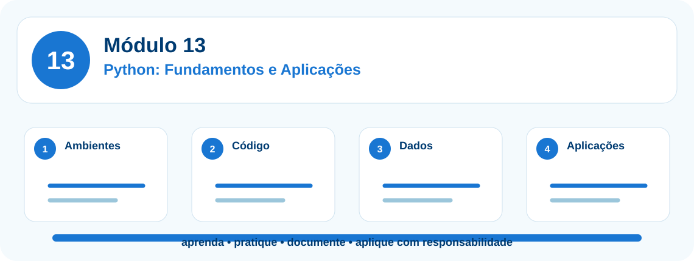

Python: Fundamentos e Aplicações
Fundamentos de programação em Python, ambientes de desenvolvimento, estruturas de dados, funções, arquivos, orientação a objetos, análise de dados e aplicações práticas.
Ferramentas relacionadas neste módulo

Apresentação do módulo
Fundamentos de programação em Python, ambientes de desenvolvimento, estruturas de dados, funções, arquivos, orientação a objetos, análise de dados e aplicações práticas. O percurso foi desenhado para participantes que desejam sair do uso pontual de ferramentas e construir competência técnica aplicada, com segurança, documentação e revisão humana.
Competências desenvolvidas
- escolher e preparar um ambiente Python adequado ao contexto de aprendizagem;
- escrever programas simples com sintaxe correta, comentários, variáveis e tipos de dados;
- usar operadores, condicionais e laços para resolver problemas verificáveis;
- organizar informações com listas, tuplas, dicionários, conjuntos e DataFrames;
- criar funções reutilizáveis, importar bibliotecas e documentar entradas e saídas;
- ler e escrever arquivos CSV e JSON com tratamento de erros;
- compreender classes, objetos e métodos em exemplos aplicados;
- usar NumPy e pandas para análise tabular introdutória;
- produzir gráficos com interpretação crítica e comunicação responsável;
- construir uma miniaplicação Python com dados fictícios ou anonimizados.
Conceitos centrais
13.1 Ferramentas disponíveis, instalação e uso inicial
Objetivo da unidade
Conhecer as formas de usar Python localmente ou na nuvem e escolher o ambiente adequado para cada perfil.
Conceitos trabalhados
Exemplo aplicado
Roteiro de laboratório
Roteiro de prática: Preparar o primeiro ambiente de estudo
- Escolha entre Google Colab, Jupyter local ou Anaconda conforme o contexto da turma.
- Crie um notebook ou arquivo chamado primeiro_programa.py.
- Execute um comando print e registre a versão do Python.
- Documente vantagens, limites e cuidados do ambiente escolhido.
Produto da unidade
Ambiente escolhido e testado.
Evidência de aprendizagem
O participante executa um primeiro código e explica onde ele roda.
13.2 Sintaxe, comentários, variáveis e tipos de dados
Objetivo da unidade
Compreender como Python organiza instruções, comentários, nomes, valores e tipos básicos.
Conceitos trabalhados
Exemplo aplicado
Roteiro de laboratório
Roteiro de prática: Criar um cadastro simples em Python
- Crie variáveis com dados fictícios de um participante.
- Use type() para identificar cada tipo.
- Inclua comentários explicando o objetivo do código.
- Imprima uma mensagem formatada com os dados.
Produto da unidade
Script introdutório comentado.
Evidência de aprendizagem
O participante diferencia sintaxe, comentário, variável e tipo de dado.
13.3 Operadores, expressões e controle de fluxo
Objetivo da unidade
Usar operadores e estruturas condicionais para tomar decisões simples em programas.
Conceitos trabalhados
Exemplo aplicado
Roteiro de laboratório
Roteiro de prática: Validar regras de presença
- Crie variáveis para carga horária, presenças e percentual mínimo.
- Calcule a frequência.
- Use if, elif e else para classificar como aprovado, atenção ou pendente.
- Teste pelo menos três cenários.
Produto da unidade
Validador simples de presença.
Evidência de aprendizagem
O participante transforma uma regra em código verificável.
13.4 Estruturas de dados: listas, tuplas, dicionários e conjuntos
Objetivo da unidade
Organizar coleções de informações e escolher a estrutura adequada para cada situação.
Conceitos trabalhados
Exemplo aplicado
Roteiro de laboratório
Roteiro de prática: Modelar uma pequena turma
- Crie uma lista de participantes.
- Crie dicionários com nome, e-mail, perfil e módulo.
- Use um conjunto para identificar perfis únicos.
- Percorra os dados com for e gere um resumo.
Produto da unidade
Estrutura de turma em Python.
Evidência de aprendizagem
O participante seleciona a estrutura de dados conforme o problema.
13.5 Funções, parâmetros e bibliotecas
Objetivo da unidade
Criar funções reutilizáveis e importar bibliotecas para organizar soluções.
Conceitos trabalhados
Exemplo aplicado
Roteiro de laboratório
Roteiro de prática: Transformar regras em funções
- Escreva uma função padronizar_nome().
- Escreva uma função calcular_frequencia().
- Teste as funções com dados diferentes.
- Explique entrada, processamento e saída de cada função.
Produto da unidade
Arquivo com funções documentadas.
Evidência de aprendizagem
O participante cria funções com parâmetros e retorno.
13.6 Manipulação de arquivos, CSV, JSON e exceções
Objetivo da unidade
Ler, escrever e tratar arquivos de forma segura, compreendendo erros comuns.
Conceitos trabalhados
Exemplo aplicado
Roteiro de laboratório
Roteiro de prática: Trabalhar com arquivos fictícios
- Crie um CSV pequeno com nome, módulo e presença.
- Leia o arquivo com Python.
- Trate erros de arquivo inexistente com try/except.
- Salve um resumo em JSON.
Produto da unidade
Leitor de CSV com tratamento de erro.
Evidência de aprendizagem
O participante manipula arquivos sem expor dados reais.
13.7 Programação orientada a objetos em Python
Objetivo da unidade
Compreender classes, objetos, atributos e métodos em exemplos simples.
Conceitos trabalhados
Exemplo aplicado
Roteiro de laboratório
Roteiro de prática: Modelar um participante como objeto
- Defina uma classe Participante.
- Crie atributos nome, e-mail, módulo e presença.
- Implemente um método situacao().
- Crie dois objetos e compare resultados.
Produto da unidade
Classe simples com objetos instanciados.
Evidência de aprendizagem
O participante entende objeto como representação de uma entidade do problema.
13.8 Python para dados: NumPy, pandas e DataFrames
Objetivo da unidade
Usar bibliotecas essenciais para organizar tabelas, filtrar dados e calcular indicadores.
Conceitos trabalhados
Exemplo aplicado
Roteiro de laboratório
Roteiro de prática: Analisar inscrições com pandas
- Importe pandas.
- Crie ou carregue um DataFrame com dados fictícios.
- Filtre por perfil e módulo.
- Calcule contagens e médias simples.
Produto da unidade
Notebook com análise tabular.
Evidência de aprendizagem
O participante manipula DataFrames e interpreta resultados.
13.9 Visualização de dados e análise exploratória
Objetivo da unidade
Criar gráficos simples e interpretar padrões iniciais com responsabilidade.
Conceitos trabalhados
Exemplo aplicado
Roteiro de laboratório
Roteiro de prática: Criar visualizações didáticas
- Prepare dados fictícios.
- Crie um gráfico com Matplotlib ou Seaborn.
- Adicione título, rótulos e legenda.
- Escreva uma interpretação curta e honesta do gráfico.
Produto da unidade
Dois gráficos com interpretação.
Evidência de aprendizagem
O participante diferencia visualizar dados de tirar conclusões precipitadas.
13.10 Projeto aplicado: miniaplicação em Python
Objetivo da unidade
Integrar variáveis, estruturas, funções, arquivos e visualização em uma solução simples.
Conceitos trabalhados
Exemplo aplicado
Roteiro de laboratório
Roteiro de prática: Construir o projeto final do módulo
- Defina o problema e os dados fictícios.
- Leia ou crie a base.
- Implemente funções de validação.
- Gere tabela resumida, gráfico e relatório textual.
- Liste limitações, riscos e próximos passos.
Produto da unidade
Miniaplicação documentada em notebook ou script.
Evidência de aprendizagem
O participante apresenta uma solução executável e explica suas decisões.
Projeto integrador do Módulo 13
Produto final: um artefato prático documentado, com dados fictícios ou anonimizados, evidências de execução, explicação das decisões tomadas e cuidados éticos.
O participante deve apresentar objetivo, dados usados, ferramentas escolhidas, etapas realizadas, validações, limitações, riscos e próximos passos.